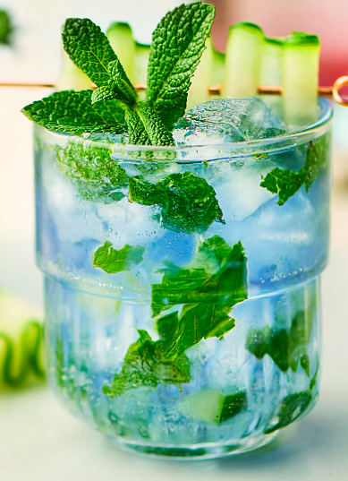

The Empress

Description
This is a nice summer cocktail with the 1908 Empress Gin. You have the nice mint and cucumber notes for the refreshing
sitting by the pool feel. Then you have the basil to bring all the flavors together really bringing the juniper berries
of the gin out. This is definetly a cocktail you won't want to miss out on for the summer!
Ingredients
- 2 OZ Empress 1908 Gin
- Mint
- Basil
- Cucumber
- Ice
- Soda Water
Steps
- Place some mint leaves, basil, and thin slices of cucumber in the bottom of a chilled rocks glass
- Muddle the ingredients lightly; you only want to get the oils out of the mint so do not muddle too rough
- Add your ice and Empress 1908 Gin
- Top with soda water
- Garnish with a mint sprig and a long thin cucumber slice that could go around the inside of the glass